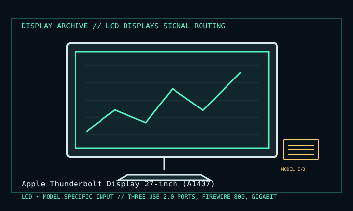

[ INDIVIDUAL COMPONENT // DISPLAY ARCHIVE ]
Apple Thunderbolt Display 27-inch (A1407)
27-inch IPS desktop monitor with integrated Thunderbolt dock, 2011–2016.

IDENTIFICATION: Match the exact model suffix, region and installed option boards to the cited manual and rear label. Do not infer electrical compatibility from connector shape.
Model-specific specifications
| Catalog class | Lcd Displays |
|---|---|
| Exact product | Apple Thunderbolt Display 27-inch (A1407) |
| Era / purpose | 27-inch IPS desktop monitor with integrated Thunderbolt dock, 2011–2016. |
| Panel / image | 27-inch IPS TFT LCD; 2560 × 1440 native at 60 Hz; LED backlight. |
| Host interface | Built-in Thunderbolt cable is the display and data input. A Mini DisplayPort-only host is not a Thunderbolt host and cannot drive this display. |
| Dock / power | Three USB 2.0 ports, FireWire 800, Gigabit Ethernet, downstream Thunderbolt, FaceTime HD camera/microphone and MagSafe charging lead. |
| Power / mechanics | 100–240 V AC; up to 250 W when charging a connected MacBook Pro. Approx. 650 × 491 × 207 mm with stand, about 10.8 kg. |
Revision, timing & host compatibility
A1407 is Thunderbolt, not Mini DisplayPort and not USB-C. Requires a Thunderbolt host; legacy Thunderbolt-to-Thunderbolt adapters may be needed for newer Macs, but USB-C alone does not guarantee Thunderbolt compatibility. Retain integrated MagSafe/Thunderbolt cables; cable damage is a known service challenge.
Before operation, compare source signal type, scan/frame timing, pinout, interface bandwidth, input-board configuration and mains/DC rating against the model-specific manual and nameplate. A listed maximum mode is not a promise of optimum image quality.
Vintage preservation & repair notes
Photograph cable condition and serial before moving; integrated cables are not ordinary replaceable monitor leads. Test display, camera, Ethernet, FireWire, USB and charging individually. Preserve the aluminum stand and original power cord; follow Apple repair guidance for bonded glass and power supply.
Record serial/date code, configuration, all installed interface boards, accessories, image condition, calibration state, test source and document edition. Disconnect power before external cleaning and use only the manufacturer-approved procedure; do not open CRT/LCD/OLED equipment without qualified service practice.
Manufacturer manuals & specifications
- Apple Thunderbolt Display (27-inch) Technical SpecificationsApple manufacturer specifications and host requirements.
- Apple Thunderbolt Display User GuideManufacturer setup and safety documentation.